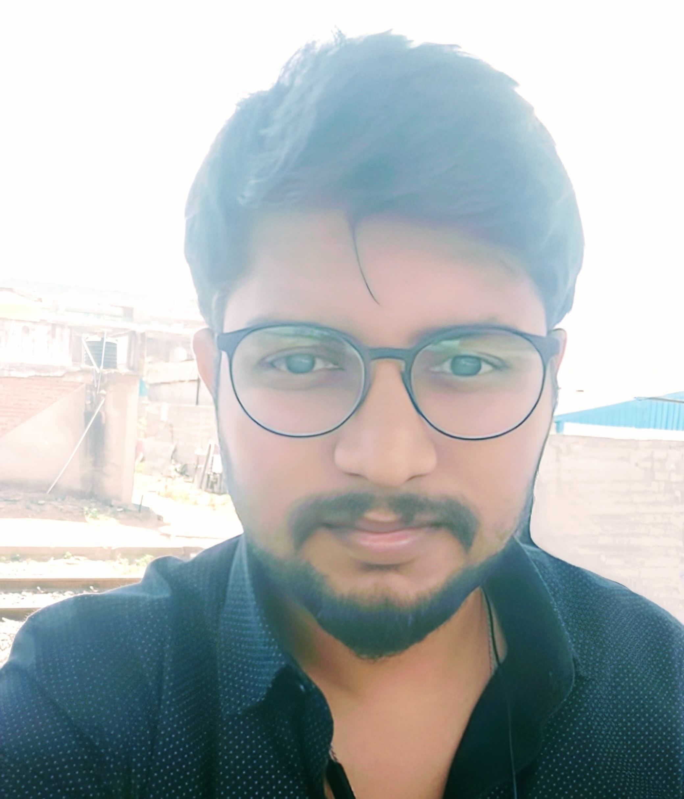

HariKrishnan B

Ph: 9092327318
Email: harikrish120027@gmail.com
Github Portfolio
Summary
I am a process-driven specialist with over 5 years of experience optimizing business operations and enhancing workflow efficiency. Skilled in analyzing data, implementing process improvements, and ensuring compliance with regulatory standards, I excel at driving continuous improvement initiatives. I am eager to bring my expertise in process optimization to a dynamic team while continuing to streamline operations and improve overall productivity.
Education
- Bachelor of Computer Science - SCP Jain Collage (2012-2015)
Work Experience
- Process Specialist - Cognizant Technology Solutions.
Aug 2015 - Apr 2020
- Led process optimization initiatives to enhance operational efficiency and ensure compliance with regulatory standards.
- Collaborated with cross-functional teams to streamline workflows and implement industry best practices.
- Analyzed data to identify areas for improvement and drove continuous improvement initiatives.
- Trained and mentored team members, while maintaining process documentation and tracking key performance indicators.
- Web Manager - Ar Arazzaq Isotech.
Jan 2021 - May 2024
- Participated in process improvement initiatives and identified solutions to prevent issues from escalating.
- Analyzed business processes to identify inefficiencies, redundancies, and automation opportunities.
- Designed and implemented new processes, workflows, and technology solutions to enhance operational efficiency and productivity.
- Facilitated cross-functional team meetings to gather requirements, set project timelines, and assign responsibilities for process improvement initiatives.
- Developed and maintained detailed process documentation, including process maps, SOPs, and training materials.
Skills
Technical Skills:
- Programming Languages: VBA, HTML, MQL
- Version Control: Git, GitHub
- Tools & Technologies: Visual Studio Code
Soft Skills:
- Problem-solving:

- Attention to detail:
- Communication and collaboration:
- Time management:
Others